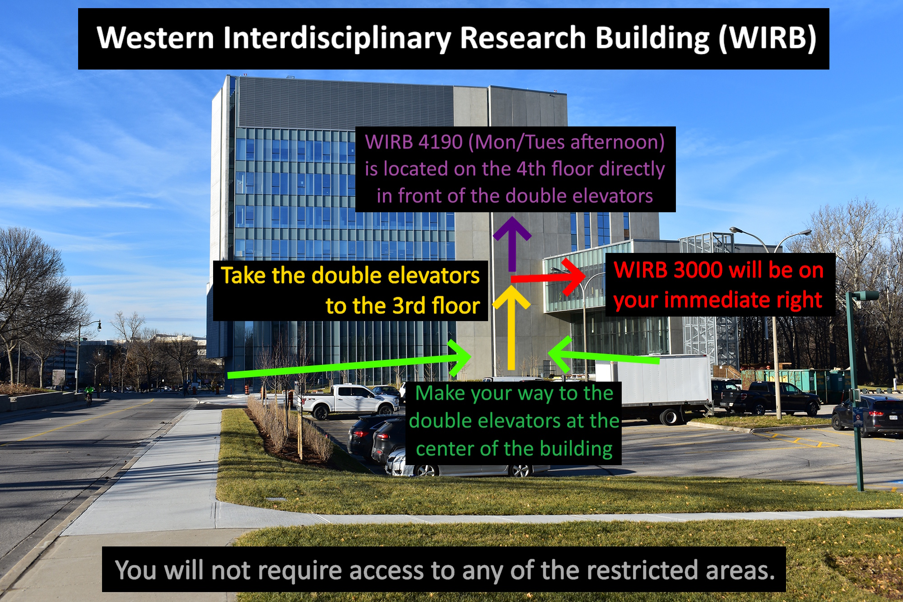

In person – All volunteers will be wearing a red lanyard
Online – All questions may be directed to Kevin Stubbs and Androu Abdalmalak (kstubbs5@uwo.ca, androu@nirx.net). Please include us both to ensure a prompt response.
All core events will take place in the Western Interdisciplinary Research Building (WIRB).
If you are taking a taxi or other ride-share, then "Western Interdisciplinary Research Building" will be sufficient for them to find their way.
Note that most of campus shares a street address and postal code (a source of constant issues) so you will need to use the name of the building instead.
Day passes have already been sent out to those who requested them. We recommend printing them so that you have more options in where/how you can park.
See WestNIRS-2025_Parking-Instructions.pdf
Unfortunately, these passes are not valid for the parking lot directly beside WIRB.
Note that guest parking on campus is limited so you should plan your route and arrive early. Parking may be especially limited on Wednesday and Thursday due to convocation.
All days begin in WIRB 3000
During the Workshop afternoons, we will move to 4190 as outlined in the schedule.
Both 3000 and 4190 are located centrally beside the elevators
You will not need to go into any restricted (card access) areas.
| Day | Time |
|---|---|
| Monday | 8:30 AM – 2:15 PM |
| Tuesday | 8:30 AM – 1:10 PM |
| Wednesday | 8:30 AM – 6:00 PM |
| Thursday | 8:30 AM – 6:00 PM |
| Friday | 8:30 AM – 1:00 PM |
Name tag pickup will be available any time that WIRB 3000 is open
See WestNIRS-2025_Schedule.pdf
Note that Tuesday’s lunch will now be picked up in 3000 (previously 4190).
See the schedule and poster numbers in WestNIRS-2025_Poster-Sessions.pdf
Poster setup
Note that the abstract booklet includes posters, oral presentations, and a few of the invited talks.
WestNIRS-2025_Abstracts.pdf
You can either:
Testing slides:
Lunches with labeled modifications (e.g., dairy-free) are reserved for those who specified dietary restrictions.
Non-packaged desserts may contain nuts.
All chicken served in the lunches is Halal
Morning and afternoon beaks include a limited number of unlisted vegan, dairy-free, and nut-free options.
The break and lunch menus are outlined in WestNIRS-2025_Catering.pdf
Please inform a volunteer immediately if you see a spill
During breaks, the 3rd floor washroom will become crowded
Consider using any of the other nearby washrooms included in WestNIRS-2025_Washroom_Map.pdf
We will once again have the following awards:
For each type of award, one is limited to undergraduate/masters students while the other has no restrictions.
Winners will be selected by a panel of judges and announced during the closing remarks.
An individual may win only one award.
To be eligible for an award, you must have submitted an abstract and presented your work during the conference.
The WIRB is wheelchair accessible. Please contact us if you have any questions or concerns about accessibility.
Seating may be limited during the public lecture on Wednesday morning depending on attendance. Please arrive early to secure a good seat.
The non-registered members of the audience will be leaving after the coffee break.
a. Eduroam is the easiest method for anyone from an institution that supports it (should be most)
Alternatively, you can select the guest network and enter a uwo email as your sponsor. Then the sponsor needs to approve. The default duration is quite short, so the sponsor also needs to extend it form their browser. We suggest making friends with the Western folks around you as Kevin and Androu may be slow to approve requests sent to them
Pictures may be taken during the event for promotional purposes in future years.
Social Event (Wednesday @ 5 PM)
Join us for dinner and drinks at The Grad Club.
Choice of: Grilled chicken breast, sausage, burger, or vegetarian burger.
Served with french fries, salad, veg/dip, and dessert.
Directions: WestNIRS-2025_Social-Event_Directions.pdf (just a few minutes walk)
Those taking the tour will join up afterwards.
Take everything with you. We will not be back in 3000 until the next morning.